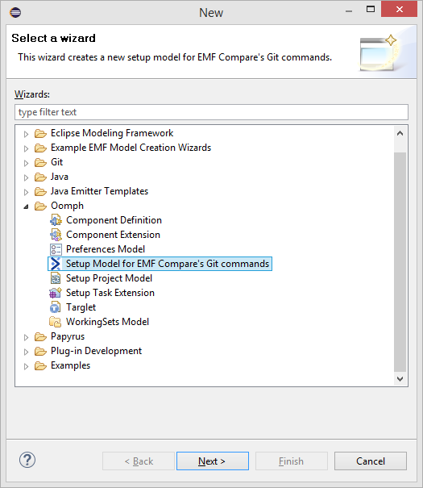
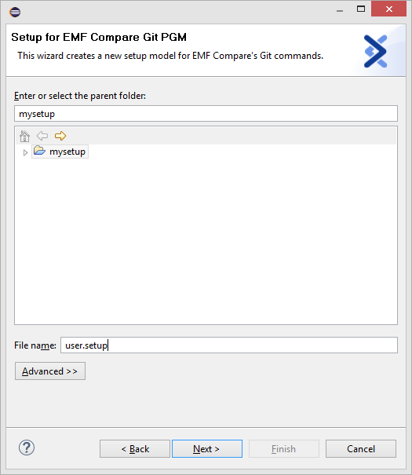
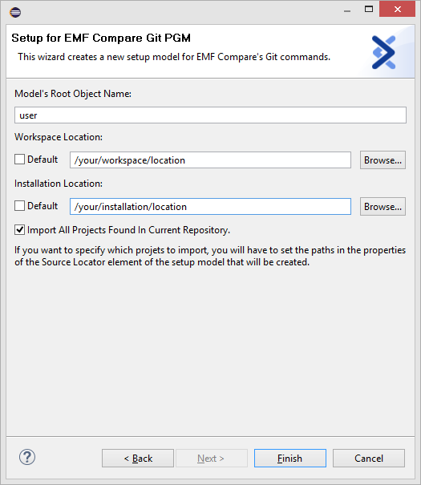
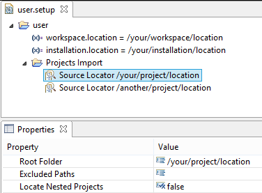
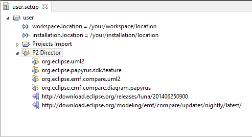

Version 3.2.0.201411250710
When a user wants to compare or merge EMF models from the git command line interface, the operation is doing in a textual way. If he wants to compare or merge EMF models the needs in a logical way, he needs to do that in an Eclipse environment similar to the one he used to create these models. As such, the environment requires some plugins to be installed but it may also requires some preferences to be set, some perspective to be activated etc.. Among these plugins, there are the mandatory ones that will be use to do the compare/merge operation: EMF Compare and EGit.
EMF Compare provides additional git commands in order to compare and merge models on the command line. These commands will use an Eclipse as an headless application (no Graphical User Interface) including EMF Compare and Egit to compare models in a logical way. To provisioned such Eclipse environment, the new git commands will call a program using Oomph.
Oomph Oomph is a technology that provisions a set of plugins in an Eclipse IDE, clones Git repositories, binds Git repositories to this IDE, checks projects, sets workspace preferences... The configuration is model driven, with files called Oomph setup model files.
The basics git commands don't allow to compare or merge EMF models in a logical way. Additional git commands must be added to your system. Each git command is a shell script describing its behaviour. So, to add a new git command, a new script has to be developed. The new scripts corresponding to the git commands are:
These scripts must be added on each computer that need to do "models compatible" git operations from command line interface, to enable them.
You can find the scripts at the following address: EMF Compare Git Scripts.
Note that the location of these scripts must be on your PATH environment variable. Also, they must have execution permission.
These scripts will execute a program named emfcompare-git-pgm. You also have to retrieve this program on your system. Once retrieved, you will have to export a variable named EMF_COMPARE_GIT_PGM_PATH with the path of folder containing the program emfcompare-git-pgm as value.
You can find the program at the following address: EMF Compare Git PGM. Download the one corresponding to your system.
The setup file will allow you to configure the headless application used by your command. To create a setup file you need an Eclipse environment with the Setup Model for EMF Compare's Git commands Wizard plugin installed. Add the following p2 repository (update-site) in your update manager (in Eclipse, Help Menu > Install New Software..., Add... button on the top right corner): EMF Compare's Git commands Wizard plugin update-site
Then, select the EMF Compare Git PGM Wizards > EMF Compare Git PGM Oomph Wizard Feature and click on Finish.
This tool requires Oomph 1.0.0 or later. You may need to add the Oomph update site to the list of the available update sites to be able install and/or update Oomph: http://download.eclipse.org/oomph/updates
To create a new setup model for EMF Compare's git commands, select File > New > Other ... > Oomph > Setup Model for EMF Compare's Git commands. Then click Next >.

The first page of the wizard asks you to select the project that will contain the setup model, and name that setup model. Then click Next >.

The last page of the wizard asks you to set:
Once all parameters have been set, click Finish.

Once created, you will able to modify the setup model. You can also create a setup model file from scratch if you prefer. This setup model can contains:


Please visit Oomph website for more details about Oomph.
You can find an example of setup model file for EMF compare's Git commands here: Setup Example This example contains a workspace location to edit, an installation location to edit, and additional plugins to take into account for the git command to execute. These additional plugins are Papyrus, UML2, GMF, and EMF Compare extensions.
The logicaldiff command is the "models compatible" version of the git diff command. To see a full description of the git diff command, please visit http://git-scm.com/docs/git-diff.
The command is specified as below:
git logicaldiff [--git-dir <path>] <setup> <commit> [ <commit>] [-- <path>]
To see the changes between a revision and the HEAD revision, you should omit the second commit.
git logicaldiff [--git-dir <path>] <setup> <commit> [--] [ <path>...]
In all cases, <commit> can refers to a branch name or a commit id. In all cases, [-- <path>] option allows to filter the diff command only on files that match the <path>. In all cases, [--git-dir <path>] option allows to specify a git repository (if the command is not run inside a repository)
[--show-stack-trace]
Use this option to display java stack trace in console on error.
[--help (or -h)]
Dispays help for this command.
The logicalmerge command is the "models compatible" version of the git merge command. To see a full description of the git merge command, please visit http://git-scm.com/docs/git-merge.
The command is specified as below:
git logicalmerge [--git-dir <path>] <setup> <commit>
Assume the following history exists and the current branch is master:
A---B---C topic
/
D---E---F---G master
Then git logicalmerge mySetupModel.setup topic will replay the changes made on the topic branch since it diverged from master (i.e., E) until its current commit © on top of master, and record the result in a new commit along with the names of the two parent commits and a log message from the user describing the changes.
A---B---C topic
/ \
D---E---F---G---H master
You can also replace the topic branch name by his commit id:
git logicalmerge mySetupModel.setup 87ad5ff
In all cases, <commit> can refers to a branch name or a commit id. In all cases, [--git-dir <path>] option allows to specify a git repository (if the command is not run inside a repository)
[-m message]
Set the commit message to be used for the merge commit (in case one is created).
[--show-stack-trace]
Use this option to display java stack trace in console on error.
[--help (or -h)]
Dispays help for this command.
The logicalmergetool command is the "models compatible" version of the git mergetool command. To see a full description of the git mergetool command, please visit http://git-scm.com/docs/git-mergetool.
Here is the constructions allowed for the git logicalmergetool:
git logicalmergetool <setup>
Run logical merge conflict resolution tools to resolve logical merge conflicts. In our case, it will launch an Eclipse platform with all the tools needed to resolve the conflict(s) induced by the merge. To do so, in the Eclipse environment, select the conflicting file(s) and open the contextual menu Team > Merge Tool. Once the conflict has been resolved, add the file to the index (staged area). And then commit.
Part of EMF Compare Documentation
Version 3.2.0.201411250710